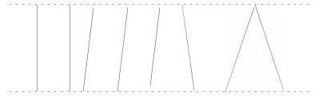

掌握教材知识结构，培养学生的能力 [1]
儿童学习数学的过程，是一个在教师指导下，有计划地、系统地掌握关于数量关系和空间形式的最基础的知识、技能，并通过学习发展智力和能力的过程。这个过程既要符合儿童的思维特点（从具体形象思维向抽象逻辑思维过渡），又要符合儿童的认知规律（感知、表象、概念、符号）。根据第七册教材内容和教学要求，在加强基础知识教学的同时，对学生能力的培养应注重以下几个方面：
一、迁移类推能力
数学是一门系统性、逻辑性十分强的学科，前后知识之间联系密切、结构严谨，每一部分知识都是前一部分知识的延伸和发展，同时又是后一部分知识的基础。例如，讲小数的写法时，强调仿照整数的写法，“整数部分按照整数的写法来写（整数部分是零的写作“0”），小数点写在个位右下角，小数部分顺次写出每一个数位上的数字。”讲小数大小比较时，先指出与比较整数大小的方法一样，“先看它们的整数部分，整数部分大的那个数就大；整数部分相同的，十分位上的数大的那个数就大，十分位上的数也相同的，百分位上的数大的那个数就大……”讲小数加、减法的意义时，通过例题说明与整数加减法的意义相同；讲小数加、减法的计算法规时，通过具体例子着重说明“各数的小数点对齐”（也就是把相同数位上的数对齐）；讲整数运算定律推广到小数时，指出对小数同样适用。如果教师把握了小数与整数的联系，很多内容就不需要完全当作新知识讲，可以引导学生把已学的整数知识迁移到小数学习中去，然后区分与整数不同的地方。这样，既节省教学时间，又使学生易于掌握小数知识，同时也培养了学生迁移类推的能力。
二、抽象、概括能力
例如，讲平行四边形，先观察事物（中国人民解放军的红领章），然后抽象出图形的特征；教学梯形的认识时，先出示梯子、堤坝、沟渠的横截面等实物图，然后根据它们的共同点，抽象出图形，并让学生找出图形的特点，在此基础上再概括出梯形的特征。
三、分析、综合能力
如教学小数的性质，教材先通过商品标价1.60元、4.00元引出新课，然后通过例1把5分米、50厘米、500毫米写成用米做单位的数，并比较它们的大小。分析：因为5分米=50厘米=500毫米，所以0.5米=0.50米=0.500米，从而得出小数末尾添上“0”后小数的大小不变。再通过例2正方形图解表示出两个小数0.30和0.3，并联系分数0.30是30个百分之一，0.3是3个十分之一，说明这两个小数也是相等的（从图上也可以看出0.30=0.3）。最后进行综合：“小数的末尾添上0或者去掉0，小数的大小不变。这叫做小数的性质。”
又例如，教学已学过的各种四边形的关系，通过分析、比较它们的相同点、不同点，然后加以综合，用集合图把它们之间的关系表示出来。
在教学解答应用题时，不仅要交给学生用“分析法”，而且也可以用“综合法”，广开解题思路，从而培养学生的分析、综合能力。
四、判断、推理能力
本册的概念、法则和规律较多，这些知识的教学，对发展学生判断、推理能力有很大的促进作用。例如，教学三角形面积的计算，当学生通过操作，将两个完全一样的三角形拼成一个平行四边形后，在推导面积公式这一关键环节上，教材中的三个问题要让学生想一想：三角形的底和高跟拼成的平行四边形的底和高有什么关系？三角形的面积与平行四边形的面积有什么关系？求三角形的面积应该怎样算？这样既体现了判断、推理过程，又给学生以导向，学生很快就能推导出：三角形的面积=底×高÷2又如，讲过角的概念后，给出两个角（教材86页），角的大小相同，但是所画的边的长短不同，让学生进行比较，不仅要求学生判断出两个角的大小如何，还要启发学生作出结论，角的大小要看两条边叉的大小，与所画边的长短没有关系，等等，这些做法十分有助于培养学生判断、推理的习惯和能力。
五、加强操作和画图，发展学生的空间观念
教学几何初步知识，不单纯是使学生获得有关图形的知识，更重要的是发展学生的空间观念。在前几册教学几何初步知识时，已经注意通过一些操作和作图发展学生的空间观念，但限于学生的接受能力，操作和作图都比较简单。在这一册应适应提高一些要求，加强图形之间内在联系的认识，加深对图形的本质特征的认识，例如，在认识角时，让学生拿两根细木条，把它们的一端钉在一起，旋转其中的一根木条，可以形成各种大小不同的角；用量角器量角的度数；用三角板拼成指定度数的角等。在练习中还增加了操作和作图的作业。教学面积的计算时，不仅要给学生一些数值，让学生代入公式进行计算，而且要让学生对一些实物（如红领巾、小队旗、零件的断面）或图形（如下）进行实际测量，利用所得的数据计算它们的面积。

这样学生不仅对图形的特征印象深刻，而且对图形的形状、大小有较明确的概念；不仅可培养学生操作和作图的技能，而且可发展学生的空间观念。
六、计算能力
教学这一册时，自始至终都要把提高学生的计算能力放在重要的地位。要充分利用课本中的基本练习题和综合练习题进行练习。练习要抓住重点，注意练习形式，如导入新知的铺垫性练习，巩固新知的单一性练习，突破难点的针对性练习，区别异同的对比性练习，防止思维定式的变式性练习，以新带旧的综合性练习，动手操作的实践性练习。等等。还要注意训练学生合理地、灵活地选用计算方法的能力，能口算的题目就用口算，能用简便算法的就用简便算法，适宜用珠算的题目可以用珠算，以提高计算能力。
第七册教材比较集中地学习数和形的知识，教师只要掌握了教材的知识结构，明确了教学目的和要求，注重在加强基础知识教学的同时培养学生的能力，就能使学生在知识技能、思维能力等方面在前三年的基础上有较大的提高。